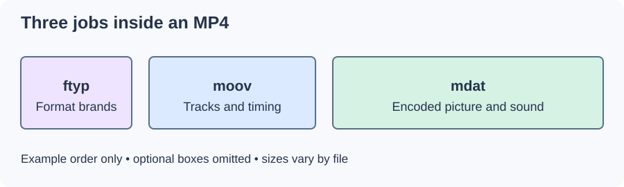

MP4 and the ISO Base Media File Format
An MP4 file usually looks like a single movie, but internally it is a collection of boxes. Some describe the tracks and their timing; others hold the encoded samples that become picture and sound.
The ISO base media file format, specified in ISO/IEC 14496-12, supplies this general structure. MP4, specified in Part 14, is one format built on it. Other formats can share the base structure without being identical to MP4.

Original schematic of a simple MP4. Box order and size vary; optional boxes are omitted.
The file-type box, ftyp, declares brands describing the format's conventions. The moov box describes the presentation, and mdat holds media data. For a conventional nonfragmented file, sample tables connect track timing to data locations.
The extension leaves important questions open
MP4 does not mean H.264 video or AAC audio in every case. Registered sample-entry identifiers tell the reader which codec and configuration a track uses. The app still needs a matching decoder and support for that track's properties.
In Emby, two MP4 movies can therefore take different playback paths. Examine the selected video, audio, and subtitle streams when investigating a compatibility problem. The container name alone is too little information.
MP4 layout also matters for delivery. Fast start moves the movie description ahead of the bulk media so a sequential reader can reach it early. Fragmentation distributes sample descriptions across successive media fragments. Both concern packaging; neither improves the quality of the encoded picture or removes a codec limit.
See Also
- Containers and Codecs
- Codec Identifiers and FourCC
- MP4 Fast Start
- Fragmented MP4
- H.264 / AVC Video
- AAC-LC Audio